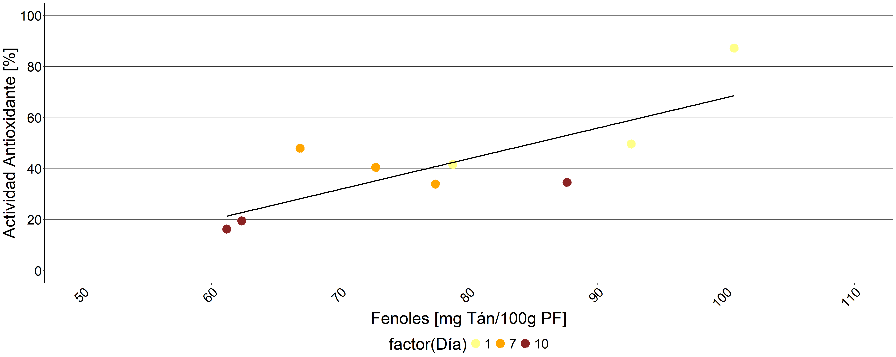
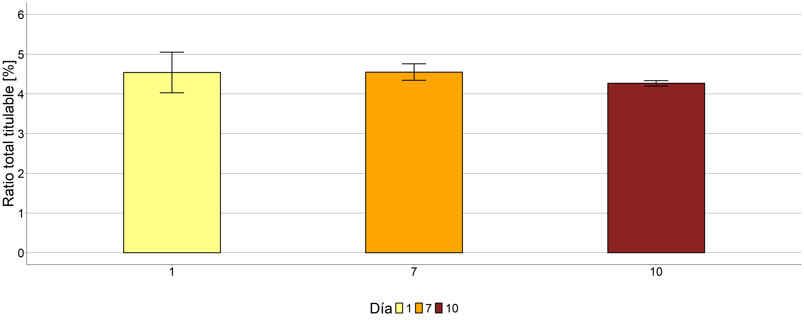

Ensayo 8
Conservación a 1°C
Respiración
Tabla resumen
## # A tibble: 4 × 4
## Día n Mean_resp sd_resp
## <fct> <int> <dbl> <dbl>
## 1 1 3 28.0 6.01
## 2 5 3 8.58 4.12
## 3 7 3 23.8 4.94
## 4 10 2 23.0 1.64
Modelo
## lm(formula = respiracion ~ Día, data = data_resp)Análisis de regresión
## Analysis of Variance Table
##
## Response: respiracion
## Df Sum Sq Mean Sq F value Pr(>F)
## Día 3 641.71 213.905 9.4964 0.007299 **
## Residuals 7 157.67 22.525
## ---
## Signif. codes: 0 '***' 0.001 '**' 0.01 '*' 0.05 '.' 0.1 ' ' 1## $emmeans
## Día emmean SE df lower.CL upper.CL
## 1 28.049379 2.740120 7 21.570024 34.52873
## 5 8.578073 2.740120 7 2.098718 15.05743
## 7 23.774397 2.740120 7 17.295041 30.25375
## 10 22.993329 3.355948 7 15.057772 30.92889
##
## Confidence level used: 0.95
##
## $contrasts
## contrast estimate SE df t.ratio p.value
## Día1 - Día5 19.471306 3.875115 7 5.025 0.0064
## Día1 - Día7 4.274983 3.875115 7 1.103 0.6991
## Día1 - Día10 5.056050 4.332511 7 1.167 0.6640
## Día5 - Día7 -15.196323 3.875115 7 -3.922 0.0231
## Día5 - Día10 -14.415256 4.332511 7 -3.327 0.0489
## Día7 - Día10 0.781067 4.332511 7 0.180 0.9977
##
## P value adjustment: tukey method for comparing a family of 4 estimatesFirmeza
Tabla resumen
## # A tibble: 4 × 4
## Día n Mean_firmeza sd_firmeza
## <fct> <int> <dbl> <dbl>
## 1 1 22 1.41 0.540
## 2 5 22 1.05 0.505
## 3 7 22 1.13 0.412
## 4 10 22 1.13 0.322
Modelo
## lm(formula = Firmeza ~ Día, data = data_fisico)Análisis de la varianza
## Analysis of Variance Table
##
## Response: Firmeza
## Df Sum Sq Mean Sq F value Pr(>F)
## Día 3 1.6232 0.54106 2.6393 0.05477 .
## Residuals 84 17.2200 0.20500
## ---
## Signif. codes: 0 '***' 0.001 '**' 0.01 '*' 0.05 '.' 0.1 ' ' 1## $emmeans
## Día emmean SE df lower.CL upper.CL
## 1 1.409091 0.09653073 84 1.2171290 1.601053
## 5 1.054545 0.09653073 84 0.8625835 1.246507
## 7 1.127273 0.09653073 84 0.9353108 1.319235
## 10 1.127273 0.09653073 84 0.9353108 1.319235
##
## Confidence level used: 0.95
##
## $contrasts
## contrast estimate SE df t.ratio p.value
## Día1 - Día5 0.3545455 0.1365151 84 2.597 0.0531
## Día1 - Día7 0.2818182 0.1365151 84 2.064 0.1733
## Día1 - Día10 0.2818182 0.1365151 84 2.064 0.1733
## Día5 - Día7 -0.0727273 0.1365151 84 -0.533 0.9509
## Día5 - Día10 -0.0727273 0.1365151 84 -0.533 0.9509
## Día7 - Día10 0.0000000 0.1365151 84 0.000 1.0000
##
## P value adjustment: tukey method for comparing a family of 4 estimates
Colorimetría
L*
Tabla resumen
## # A tibble: 4 × 4
## Día n Mean_L_color sd_L_color
## <fct> <int> <dbl> <dbl>
## 1 1 24 60.6 4.50
## 2 5 24 56.1 7.55
## 3 7 24 54.0 6.44
## 4 10 24 53.4 4.76
Modelo
## lm(formula = L_color ~ Día, data = data_fisico)Análisis de la varianza
## Analysis of Variance Table
##
## Response: L_color
## Df Sum Sq Mean Sq F value Pr(>F)
## Día 3 770.2 256.724 7.2618 2e-04 ***
## Residuals 92 3252.5 35.353
## ---
## Signif. codes: 0 '***' 0.001 '**' 0.01 '*' 0.05 '.' 0.1 ' ' 1## $emmeans
## Día emmean SE df lower.CL upper.CL
## 1 60.59625 1.213688 92 58.18576 63.00674
## 5 56.10792 1.213688 92 53.69743 58.51841
## 7 53.97333 1.213688 92 51.56284 56.38382
## 10 53.38333 1.213688 92 50.97284 55.79382
##
## Confidence level used: 0.95
##
## $contrasts
## contrast estimate SE df t.ratio p.value
## Día1 - Día5 4.488333 1.716414 92 2.615 0.0502
## Día1 - Día7 6.622917 1.716414 92 3.859 0.0012
## Día1 - Día10 7.212917 1.716414 92 4.202 0.0004
## Día5 - Día7 2.134583 1.716414 92 1.244 0.6009
## Día5 - Día10 2.724583 1.716414 92 1.587 0.3908
## Día7 - Día10 0.590000 1.716414 92 0.344 0.9859
##
## P value adjustment: tukey method for comparing a family of 4 estimatesa*
Tabla resumen
## # A tibble: 4 × 4
## Día n Mean_a_color sd_a_color
## <fct> <int> <dbl> <dbl>
## 1 1 24 3.70 3.35
## 2 5 24 11.6 4.84
## 3 7 24 12.4 6.55
## 4 10 24 14.6 3.72Modelo
## lm(formula = a_color ~ Día, data = data_fisico)Análisis de la varianza
## Analysis of Variance Table
##
## Response: a_color
## Df Sum Sq Mean Sq F value Pr(>F)
## Día 3 1637.0 545.65 23.872 1.629e-11 ***
## Residuals 92 2102.9 22.86
## ---
## Signif. codes: 0 '***' 0.001 '**' 0.01 '*' 0.05 '.' 0.1 ' ' 1## $emmeans
## Día emmean SE df lower.CL upper.CL
## 1 3.70125 0.9759081 92 1.763012 5.639488
## 5 11.61292 0.9759081 92 9.674679 13.551154
## 7 12.43042 0.9759081 92 10.492179 14.368654
## 10 14.62958 0.9759081 92 12.691346 16.567821
##
## Confidence level used: 0.95
##
## $contrasts
## contrast estimate SE df t.ratio p.value
## Día1 - Día5 -7.911667 1.380143 92 -5.732 <.0001
## Día1 - Día7 -8.729167 1.380143 92 -6.325 <.0001
## Día1 - Día10 -10.928333 1.380143 92 -7.918 <.0001
## Día5 - Día7 -0.817500 1.380143 92 -0.592 0.9342
## Día5 - Día10 -3.016667 1.380143 92 -2.186 0.1349
## Día7 - Día10 -2.199167 1.380143 92 -1.593 0.3874
##
## P value adjustment: tukey method for comparing a family of 4 estimates
b*
Tabla resumen
## # A tibble: 4 × 4
## Día n Mean_b_color sd_b_color
## <fct> <int> <dbl> <dbl>
## 1 1 24 51.3 5.15
## 2 5 24 48.2 9.89
## 3 7 24 47.0 10.0
## 4 10 24 46.7 8.22
Modelo
## lm(formula = b_color ~ Día, data = data_fisico)Análisis de la varianza
## Analysis of Variance Table
##
## Response: b_color
## Df Sum Sq Mean Sq F value Pr(>F)
## Día 3 310.4 103.464 1.4158 0.2432
## Residuals 92 6723.2 73.079## $emmeans
## Día emmean SE df lower.CL upper.CL
## 1 51.27542 1.744978 92 47.80974 54.74109
## 5 48.18417 1.744978 92 44.71849 51.64984
## 7 47.04583 1.744978 92 43.58016 50.51151
## 10 46.72083 1.744978 92 43.25516 50.18651
##
## Confidence level used: 0.95
##
## $contrasts
## contrast estimate SE df t.ratio p.value
## Día1 - Día5 3.091250 2.467772 92 1.253 0.5952
## Día1 - Día7 4.229583 2.467772 92 1.714 0.3224
## Día1 - Día10 4.554583 2.467772 92 1.846 0.2589
## Día5 - Día7 1.138333 2.467772 92 0.461 0.9672
## Día5 - Día10 1.463333 2.467772 92 0.593 0.9340
## Día7 - Día10 0.325000 2.467772 92 0.132 0.9992
##
## P value adjustment: tukey method for comparing a family of 4 estimatesActividad antioxidante
Tabla resumen
## # A tibble: 9 × 5
## # Groups: Día [3]
## Día Conc n Mean_aao sd_aao
## <fct> <fct> <int> <dbl> <dbl>
## 1 1 0.125 3 24.2 6.13
## 2 1 0.25 3 34.3 16.3
## 3 1 0.5 3 59.5 24.4
## 4 7 0.125 3 11.9 2.79
## 5 7 0.25 3 20.3 5.38
## 6 7 0.5 3 40.8 7.04
## 7 10 0.125 3 8.96 4.13
## 8 10 0.25 3 10.5 3.13
## 9 10 0.5 3 23.4 9.78
Modelo
## Formula: aao/100 ~ Día + (1 | Conc)
## Data: data_aao
## AIC BIC logLik df.resid
## -39.01704 -32.53785 24.50852 22
## Random-effects (co)variances:
##
## Conditional model:
## Groups Name Std.Dev.
## Conc (Intercept) 0.5742
##
## Number of obs: 27 / Conditional model: Conc, 3
##
## Dispersion parameter for beta family (): 20.1
##
## Fixed Effects:
##
## Conditional model:
## (Intercept) Día7 Día10
## -0.4159 -0.7540 -1.3981Anova
## Analysis of Deviance Table (Type II Wald chisquare tests)
##
## Response: aao/100
## Chisq Df Pr(>Chisq)
## Día 31.692 2 1.313e-07 ***
## ---
## Signif. codes: 0 '***' 0.001 '**' 0.01 '*' 0.05 '.' 0.1 ' ' 1Comparaciones a posteriori
## $emmeans
## Día response SE df asymp.LCL asymp.UCL
## 1 0.3974921 0.08728567 Inf 0.24411366 0.5740528
## 7 0.2368605 0.06745631 Inf 0.12994994 0.3920896
## 10 0.1401488 0.04706122 Inf 0.07047125 0.2594869
##
## Confidence level used: 0.95
## Intervals are back-transformed from the logit scale
##
## $contrasts
## contrast odds.ratio SE df asymp.LCL asymp.UCL
## Día1 / Día7 2.125578 0.4830323 Inf 1.247877 3.620615
## Día1 / Día10 4.047621 1.0261822 Inf 2.234321 7.332535
## Día7 / Día10 1.904245 0.4968901 Inf 1.033060 3.510107
##
## Confidence level used: 0.95
## Conf-level adjustment: tukey method for comparing a family of 3 estimates
## Intervals are back-transformed from the log odds ratio scale
Fenoles
## # A tibble: 3 × 4
## Día n Mean_fenoles sd_fenoles
## <fct> <int> <dbl> <dbl>
## 1 1 3 90.7 11.1
## 2 7 3 72.3 5.28
## 3 10 3 70.4 14.9
Modelo
## lm(formula = Fenoles ~ Día, data = data)Análisis de regresión
##
## Call:
## lm(formula = Fenoles ~ Día, data = data)
##
## Residuals:
## Min 1Q Median 3Q Max
## -10.928 -6.480 -5.037 4.685 19.977
##
## Coefficients:
## Estimate Std. Error t value Pr(>|t|)
## (Intercept) 98.083 9.897 9.910 2.27e-05 ***
## Día -10.141 4.581 -2.213 0.0625 .
## ---
## Signif. codes: 0 '***' 0.001 '**' 0.01 '*' 0.05 '.' 0.1 ' ' 1
##
## Residual standard error: 11.22 on 7 degrees of freedom
## Multiple R-squared: 0.4117, Adjusted R-squared: 0.3277
## F-statistic: 4.9 on 1 and 7 DF, p-value: 0.06247Por cada día transcurrido los frutos pierden en promedio -2.37 mg eq. Tán/100g PF (p=0.041)
Análisis de la varianza
## Analysis of Variance Table
##
## Response: Fenoles
## Df Sum Sq Mean Sq F value Pr(>F)
## Día 2 750.90 375.45 3.0129 0.1242
## Residuals 6 747.68 124.61Correlación AAO y fenoles
##
## Call:
## lm(formula = aao ~ Fenoles, data = data3)
##
## Residuals:
## Min 1Q Median 3Q Max
## -18.432 -6.848 -3.266 5.223 19.832
##
## Coefficients:
## Estimate Std. Error t value Pr(>|t|)
## (Intercept) -51.9147 27.5612 -1.884 0.102
## Fenoles 1.1974 0.3495 3.426 0.011 *
## ---
## Signif. codes: 0 '***' 0.001 '**' 0.01 '*' 0.05 '.' 0.1 ' ' 1
##
## Residual standard error: 13.53 on 7 degrees of freedom
## Multiple R-squared: 0.6264, Adjusted R-squared: 0.5731
## F-statistic: 11.74 on 1 and 7 DF, p-value: 0.01104## [1] 0.791479Hay evidencia para aceptar que beta1 difiere de cero (r = 0.791, valor p = 0.011 ) 
Carotenoides
## # A tibble: 3 × 4
## Día n Mean_Carotenoides sd_Carotenoides
## <fct> <int> <dbl> <dbl>
## 1 1 6 205. 29.5
## 2 7 6 298. 38.8
## 3 10 6 193. 39.2Modelo
## lm(formula = Carotenoides ~ Día, data = data)ANOVA
## Analysis of Variance Table
##
## Response: Carotenoides
## Df Sum Sq Mean Sq F value Pr(>F)
## Día 2 39212 19606.2 15.021 0.0002622 ***
## Residuals 15 19579 1305.3
## ---
## Signif. codes: 0 '***' 0.001 '**' 0.01 '*' 0.05 '.' 0.1 ' ' 1Comparaciones a posteriori
## $emmeans
## Día emmean SE df lower.CL upper.CL
## 1 204.8070 14.7494 15 173.3694 236.2447
## 7 297.5998 14.7494 15 266.1622 329.0375
## 10 193.3654 14.7494 15 161.9277 224.8030
##
## Confidence level used: 0.95
##
## $contrasts
## contrast estimate SE df t.ratio p.value
## Día1 - Día7 -92.79280 20.85881 15 -4.449 0.0013
## Día1 - Día10 11.44169 20.85881 15 0.549 0.8488
## Día7 - Día10 104.23449 20.85881 15 4.997 0.0004
##
## P value adjustment: tukey method for comparing a family of 3 estimates A los 7 días se encontró un aumento significativo en la concentración de
carotenoides (p=0.009 )
A los 7 días se encontró un aumento significativo en la concentración de
carotenoides (p=0.009 )
Clorofila a
## # A tibble: 3 × 4
## Día n Mean_Clorofila_a sd_Clorofila_a
## <fct> <int> <dbl> <dbl>
## 1 1 6 31.4 10.1
## 2 7 6 24.8 9.70
## 3 10 6 9.91 3.97Modelo
## lm(formula = Clorofila_a ~ Día, data = data)ANOVA
## Analysis of Variance Table
##
## Response: Clorofila_a
## Df Sum Sq Mean Sq F value Pr(>F)
## Día 2 1458.3 729.16 10.359 0.001493 **
## Residuals 15 1055.9 70.39
## ---
## Signif. codes: 0 '***' 0.001 '**' 0.01 '*' 0.05 '.' 0.1 ' ' 1Comparaciones a posteriori
## $emmeans
## Día emmean SE df lower.CL upper.CL
## 1 31.433842 3.425173 15 24.133259 38.73442
## 7 24.810140 3.425173 15 17.509557 32.11072
## 10 9.909989 3.425173 15 2.609406 17.21057
##
## Confidence level used: 0.95
##
## $contrasts
## contrast estimate SE df t.ratio p.value
## Día1 - Día7 6.623702 4.843926 15 1.367 0.3820
## Día1 - Día10 21.523853 4.843926 15 4.443 0.0013
## Día7 - Día10 14.900151 4.843926 15 3.076 0.0198
##
## P value adjustment: tukey method for comparing a family of 3 estimates
Clorofila b
## # A tibble: 3 × 4
## Día n Mean_Clorofila_b sd_Clorofila_b
## <fct> <int> <dbl> <dbl>
## 1 1 6 53.9 17.4
## 2 7 6 42.7 16.5
## 3 10 6 16.9 6.48
Modelo
## lm(formula = Clorofila_b ~ Día, data = data)ANOVA
## Analysis of Variance Table
##
## Response: Clorofila_b
## Df Sum Sq Mean Sq F value Pr(>F)
## Día 2 4318.8 2159.39 10.474 0.001423 **
## Residuals 15 3092.6 206.17
## ---
## Signif. codes: 0 '***' 0.001 '**' 0.01 '*' 0.05 '.' 0.1 ' ' 1Comparaciones a posteriori
## $emmeans
## Día emmean SE df lower.CL upper.CL
## 1 53.89372 5.86191 15 41.39935 66.38808
## 7 42.72866 5.86191 15 30.23430 55.22303
## 10 16.90737 5.86191 15 4.41300 29.40173
##
## Confidence level used: 0.95
##
## $contrasts
## contrast estimate SE df t.ratio p.value
## Día1 - Día7 11.16506 8.289992 15 1.347 0.3924
## Día1 - Día10 36.98635 8.289992 15 4.462 0.0012
## Día7 - Día10 25.82130 8.289992 15 3.115 0.0183
##
## P value adjustment: tukey method for comparing a family of 3 estimates
Correlación AAO y Carotenoides
##
## Call:
## lm(formula = aao ~ Carotenoides, data = data3)
##
## Residuals:
## Min 1Q Median 3Q Max
## -25.031 -7.139 -0.673 6.787 45.988
##
## Coefficients:
## Estimate Std. Error t value Pr(>|t|)
## (Intercept) 41.54099 24.12452 1.722 0.129
## Carotenoides -0.00135 0.10363 -0.013 0.990
##
## Residual standard error: 22.13 on 7 degrees of freedom
## Multiple R-squared: 2.423e-05, Adjusted R-squared: -0.1428
## F-statistic: 0.0001696 on 1 and 7 DF, p-value: 0.99## [1] -0.004922504No existe evidencia para aceptar que beta1 difiere de cero (r =
-0.004, valor p = 0.990)
 No existe evidencia para aceptar que beta1 difiere de cero (r = 0.082,
valor p = 0.8330)
No existe evidencia para aceptar que beta1 difiere de cero (r = 0.082,
valor p = 0.8330)
Acidez total titulable
## # A tibble: 3 × 4
## Día n Mean_Acidez sd_Acidez
## <fct> <int> <dbl> <dbl>
## 1 1 3 2.07 0.125
## 2 7 3 1.70 0.132
## 3 10 3 1.58 0.157
Modelo
## lm(formula = Acidez ~ Día, data = data)Análisis de regresión
## Analysis of Variance Table
##
## Response: Acidez
## Df Sum Sq Mean Sq F value Pr(>F)
## Día 2 0.38603 0.193017 10.013 0.01225 *
## Residuals 6 0.11566 0.019277
## ---
## Signif. codes: 0 '***' 0.001 '**' 0.01 '*' 0.05 '.' 0.1 ' ' 1## $emmeans
## Día emmean SE df lower.CL upper.CL
## 1 2.065067 0.08016023 6 1.868922 2.261212
## 7 1.702400 0.08016023 6 1.506255 1.898545
## 10 1.576533 0.08016023 6 1.380388 1.772678
##
## Confidence level used: 0.95
##
## $contrasts
## contrast estimate SE df t.ratio p.value
## Día1 - Día7 0.3626667 0.1133637 6 3.199 0.0426
## Día1 - Día10 0.4885333 0.1133637 6 4.309 0.0119
## Día7 - Día10 0.1258667 0.1133637 6 1.110 0.5428
##
## P value adjustment: tukey method for comparing a family of 3 estimates
pH inicial
## # A tibble: 3 × 4
## Día n Mean_pH_inicial sd_pH_inicial
## <fct> <int> <dbl> <dbl>
## 1 1 3 3.30 0.0252
## 2 7 3 3.40 0.0404
## 3 10 3 3.40 0.0289
Modelo
## lm(formula = pH_inicial ~ Día, data = data)Análisis de regresión
## Analysis of Variance Table
##
## Response: pH_inicial
## Df Sum Sq Mean Sq F value Pr(>F)
## Día 2 0.018756 0.0093778 9.0753 0.01533 *
## Residuals 6 0.006200 0.0010333
## ---
## Signif. codes: 0 '***' 0.001 '**' 0.01 '*' 0.05 '.' 0.1 ' ' 1## $emmeans
## Día emmean SE df lower.CL upper.CL
## 1 3.303333 0.01855922 6 3.257921 3.348746
## 7 3.403333 0.01855922 6 3.357921 3.448746
## 10 3.396667 0.01855922 6 3.351254 3.442079
##
## Confidence level used: 0.95
##
## $contrasts
## contrast estimate SE df t.ratio p.value
## Día1 - Día7 -0.10000000 0.02624669 6 -3.810 0.0207
## Día1 - Día10 -0.09333333 0.02624669 6 -3.556 0.0278
## Día7 - Día10 0.00666667 0.02624669 6 0.254 0.9653
##
## P value adjustment: tukey method for comparing a family of 3 estimatesRatio
## # A tibble: 3 × 4
## Día n Mean_Ratio sd_Ratio
## <fct> <int> <dbl> <dbl>
## 1 1 3 4.54 0.511
## 2 7 3 4.55 0.207
## 3 10 3 4.27 0.0671
Modelo
## lm(formula = Ratio ~ Día, data = data)Análisis de regresión
## Analysis of Variance Table
##
## Response: Ratio
## Df Sum Sq Mean Sq F value Pr(>F)
## Día 2 0.15370 0.076852 0.7465 0.5134
## Residuals 6 0.61772 0.102953## $emmeans
## Día emmean SE df lower.CL upper.CL
## 1 4.540136 0.1852507 6 4.086844 4.993428
## 7 4.547998 0.1852507 6 4.094706 5.001290
## 10 4.266929 0.1852507 6 3.813637 4.720221
##
## Confidence level used: 0.95
##
## $contrasts
## contrast estimate SE df t.ratio p.value
## Día1 - Día7 -0.00786201 0.2619841 6 -0.030 0.9995
## Día1 - Día10 0.27320673 0.2619841 6 1.043 0.5796
## Día7 - Día10 0.28106874 0.2619841 6 1.073 0.5631
##
## P value adjustment: tukey method for comparing a family of 3 estimates
Sólidos solubles
## # A tibble: 3 × 4
## Día n Mean_Solidos sd_Solidos
## <fct> <int> <dbl> <dbl>
## 1 1 3 9.33 0.467
## 2 7 3 7.73 0.533
## 3 10 3 6.73 0.769Modelo
## lm(formula = Solidos ~ Día, data = data)Análisis de regresión
## Analysis of Variance Table
##
## Response: Solidos
## Df Sum Sq Mean Sq F value Pr(>F)
## Día 2 10.3200 5.1600 14.159 0.005345 **
## Residuals 6 2.1867 0.3644
## ---
## Signif. codes: 0 '***' 0.001 '**' 0.01 '*' 0.05 '.' 0.1 ' ' 1## $emmeans
## Día emmean SE df lower.CL upper.CL
## 1 9.333333 0.3485419 6 8.480482 10.186185
## 7 7.733333 0.3485419 6 6.880482 8.586185
## 10 6.733333 0.3485419 6 5.880482 7.586185
##
## Confidence level used: 0.95
##
## $contrasts
## contrast estimate SE df t.ratio p.value
## Día1 - Día7 1.6 0.4929127 6 3.246 0.0402
## Día1 - Día10 2.6 0.4929127 6 5.275 0.0045
## Día7 - Día10 1.0 0.4929127 6 2.029 0.1861
##
## P value adjustment: tukey method for comparing a family of 3 estimatesPCA
## Importance of components:
## PC1 PC2 PC3
## Standard deviation 3.4037 1.5539 4.403e-16
## Proportion of Variance 0.8275 0.1725 0.000e+00
## Cumulative Proportion 0.8275 1.0000 1.000e+00## a_color ATT aao_0.125 Respiración Fenoles
## 8.6293819 8.6255089 8.6168928 8.5762641 8.4718789
## Sólidos Firmeza L_color pH b_color
## 8.3931017 8.2051790 8.1007581 7.9548838 7.3240295
## Clo_a Clo_b Ratio Carotenoides
## 6.5160138 6.4679490 3.7801160 0.3380426## Carotenoides Ratio Clo_b Clo_a b_color
## 39.79155808 23.27689434 10.38098703 10.15037784 6.27361361
## pH L_color Firmeza Sólidos Fenoles
## 3.24684879 2.54696102 2.04596180 1.14433045 0.76636676
## Respiración aao_0.125 ATT a_color
## 0.26553869 0.07060736 0.02926830 0.01068594Biplot

Análisis de componentes principales para las variables fisicoquímicas de frutos de H. edulis cosechados en Gualeguaychú en noviembre de 2023 y conservados a 1°C a los 1, 7 y 10 días.